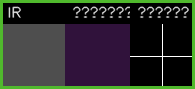
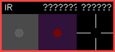
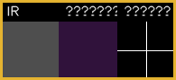

绿框样例：平滑规则交点
未绑扎

- score
- 0.000
- quality
- 1.000
- height
- 0.00 mm
- texture
- 0.00
- ridge break
- 0.00
clean_flat_crossing
规则版分类器：局部 IR + 深度高度差 + 中心/环形差分 + 脊线破坏 + 证据质量。当前默认 mode=shadow，只记录，不阻断。
当前事件日志 /home/hyq-/simple_lashingrobot_ws/src/tie_robot_perception/data/bind_classification_events.jsonl 为空，因此还不能统计真实现场精度、召回率或红/绿框准确率。下面展示的是分类器 sanity 实验：它能按设计把干净交点判为绿框未绑、把中心结节/凸起判为红框已绑、把证据不足判为不确定。真实效果需要现场跑一次 MODE_BIND_CHECK 后再刷新本报告。

clean_flat_crossing

center_bump_texture_or_ridge_break

valid_depth_ratio_too_low
before 为干净交点，after 加入中心凸起和纹理，复检输出 success，score=1.000，reason=after_has_new_bound_evidence。
上线顺序建议：先保持 shadow 收集现场红/绿样本；人工核对后再调阈值；最后只在高置信 bound 时进入 advisory 或 blocking。
| 点位 | 分类 | score | quality | reason |
|---|---|---|---|---|
| 当前还没有现场分类事件。先运行 pointAI 的 MODE_BIND_CHECK 后，本表会显示真实点位记录。 | ||||